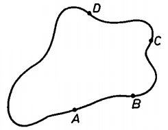

Y20 (2020) — English translation
Determining the resistivity of flat objects is an important practical problem. Because The shape of objects is arbitrary, and it is difficult to calculate streamlines in them. In 1958, Leo van der Pauw solved this problem for plates of arbitrary geometric shape. 4 contacts $A$, $B$, $C$ and $D$ are connected to the central part of the side surface of the plate of thickness $d$ (see figure). First, current $I_{AB}$ is passed through nodes $A$ and $B$ and voltage $U_{CD}$ is measured between nodes $C$ and $D$. Resistance $R_{\text{AB,CD}}$ is calculated as $\cfrac{U_{CD}}{I_{AB}}$. Then, current $I_{BC}$ is passed through nodes $B$ and $C$ and voltage $U_{DA}$ is measured between nodes $D$ and $A$. Resistance $R_{\text{BC,DA}}$ is calculated as $\cfrac{U_{DA}}{I_{BC}}$.
Determining the resistivity of flat objects is an important practical problem. Because The shape of objects is arbitrary, and it is difficult to calculate streamlines in them. In 1958, Leo van der Pauw solved this problem for plates of arbitrary geometric shape. 4 contacts $A$, $B$, $C$ and $D$ are connected to the central part of the side surface of the plate of thickness $d$ (see figure). First, current $I_{AB}$ is passed through nodes $A$ and $B$ and voltage $U_{CD}$ is measured between nodes $C$ and $D$. Resistance $R_{\text{AB,CD}}$ is calculated as $\cfrac{U_{CD}}{I_{AB}}$. Then, current $I_{BC}$ is passed through nodes $B$ and $C$ and voltage $U_{DA}$ is measured between nodes $D$ and $A$. Resistance $R_{\text{BC,DA}}$ is calculated as $\cfrac{U_{DA}}{I_{BC}}$.

Theoretically, it can be shown that the resistivity of a material is calculated using the following formula $$ \rho=\cfrac{{\pi}d}{\ln2} ({R_{\text{AB,CD}}}+{R_{\text{BC,DA}}}) \cfrac{f\left(\frac{R_{\text{AB,CD}}}{R_{\text{BC,DA}}}\right)}{2}, $$ где $f$ — некая функция, которая не выражается аналитически. В этой задаче вам предстоит численно найти значения этой функции в нескольких точках, а затем вычислить удельное сопротивление пластины. Обозначим $y=\cfrac{R_{\text{AB,CD}}}{R_{\text{BC,DA}}}$, тогда выражение для удельного сопротивления принимает вид $$ \rho=\cfrac{{\pi}d}{\ln2} {R_{\text{BC,DA}}} (y+1) \frac{f(y)}{2} $$ Из теоретических выкладок можно получить, что функция $f(y )$ удовлетворяет соотношению $$ \cfrac{y-1}{y+1}=\cfrac{f(y)}{\ln2}~\text{arch} \left(\cfrac{1}{2}\exp\left(\cfrac{\ln2}{f(y)}\right)\right) $$ Для удобства обозначив $x=\cfrac{\ln2}{f(y)}$, можно получить равносильную систему уравнений для нахождения удельного сопротивления, которой и нужно пользоваться при дальнейшем решении задачи $$ \rho={{\pi}d} {R_{\text{BC,DA}}} (y+1) \frac{1}{2x}, $$ $$ \cfrac{y-1}{y+1}=\cfrac{1}{x} \text{arch}\left(\cfrac{\text{e}^x}{2}\right). $$ Примечание. Гиперболические и обратные гиперболические функции задаются следующими формулами: $$\text{sh}~x=\cfrac{\text{e}^x-\text{e}^{-x}}{2},\quad\text{ch}~x=\cfrac{\text{e}^x+\text{e}^{-x}}{2},$$ $$\text{arsh}~x=\ln(x+\sqrt{x^2+1}),\quad\text{arch}~x=\ln(x+\sqrt{x^2-1}).$$
There are two types of semiconductors—intrinsic and impurity. The criterion for their separation is as follows: if in intrinsic semiconductors conductivity is carried out primarily due to the movement of intrinsic electrons, then in an impurity semiconductor the conductivity is influenced by impurity atoms. In this part of the problem, a $n$-type semiconductor is considered, in which the conductivity is influenced by donors. Depending on the temperature of the semiconductor, donors can be either the main or weak source of conductivity. As the temperature rises in the semiconductor, the processes of ionization of donors and the transition of its own electrons from the valence band to the conduction band occur. At low temperatures, $kT\ll{E_d}$, ($E_d$ is the ionization energy of the donor), and the transition of electrons to the conduction band can be neglected. Therefore, the main source of conductivity is ionized donors. The dependence of the concentration of ionized donors in this regime is as follows: $$ n={C_1}T^{3/4}\exp\left(-\frac{{E_d}}{2kT}\right) $$ Процесс перехода от низких температур к высоким сопровождается областью истощения, когда практически все атомы примеси ионизируются, а концентрация свободных носителей заряда остается постоянной в широком диапазоне температур. Температура перехода в область истощения называется $T_i$. В области высоких температур собственные электроны приобретают достаточную энергию для перехода в зону проводимости, и концентрация свободных электронов начинает резко возрастать. В этой области температур, называемой областью собственной проводимости, основной вклад в проводимость вносят собственные электроны. Температура перехода в область собственной проводимости обозначается $T_s$. Концентрация свободных электронов в области собственной проводимости зависит от температуры по следующему закону $$ n={C_2}T^{3/2}\exp\left(-\frac{\Delta{E_g}}{2kT}\right), $$ где $\Delta{E_g}$ is the band gap.
Source: https://pho.rs/p/37